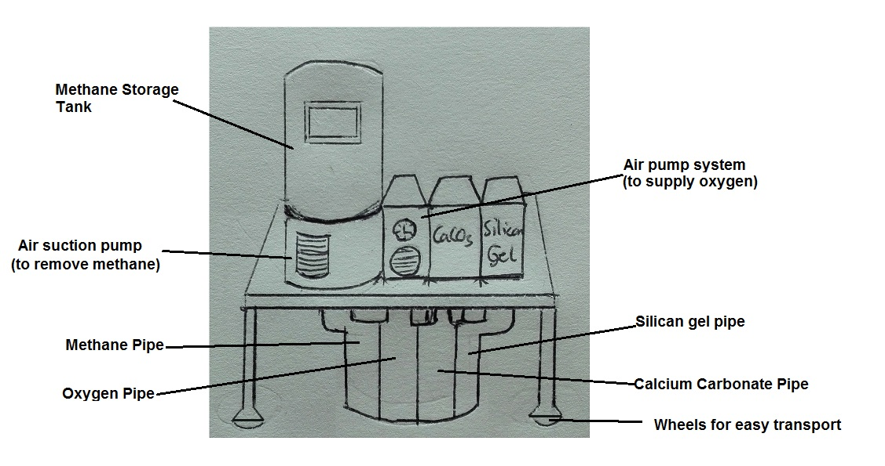
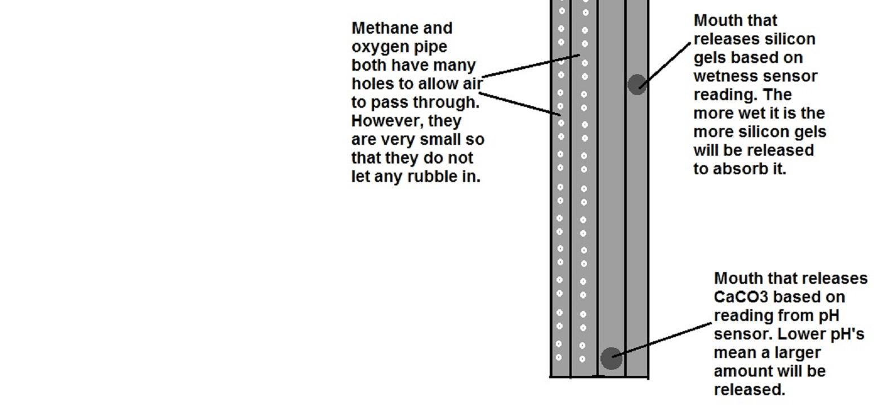

I have designed a robot that tackles widespread problems in landfill sites. It is mainly aimed at developing countries where they may not have the financial ability to put environmental measures against these problems in place. LEIR has two main aims:
Reduction of:
1. Land Fill Gas
2. Leachate
By helping reduce two environmental problems associated with landfill simultaneously it will be more affordable and easier to use than the big scale systems that are in place in developed countries. LEIR does only works in small areas at a time but will still be helpful in places where there are no environmental precautions at all.
1. Land Fill Gas
The main gas released by landfill sites is methane. It is estimated that around the world emmissions from landfill are between 10 and 70 million tonnes each year. Most of this originates from developing countries where there are high levels of waste. This is a huge problem as methane is a very strong greenhouse gas that contributes to global warming. However, developing countries have financial constraints in implementing a methane capture system. Methane is created in landfills due to the natural decay process of waste through bacteria. The bacteria produce methane (called methanogenesis) due to the anaerobic conditions of the buried waste.
Firstly, to reduce the amount of methane in the landfill, LEIR will use an air suction pump to get the methane out of the rubbish heap. This will be stored in a tank and has many uses so will not be wasted. Methane is mainly used in electricity generation and sometimes as a raw material. In developing countries it can be directly used as a fuel.
Secondly, to reduce the amount of methane being produced into the atmosphere, LEIR will pump oxygen from the air into the middle of the waste. This decreases the anaerobic conditions and the bacteria will not be able to carry out methanogenesis.
2. Leachate
Leachate is a very harmful substance that is formed in landfills by dissolving and suspending materials found in the waste. The biggest source of leachate is the percolation of rain water. This can seep through the soil and into groundwater sources and watercourses contaminating them. In the United States and European Union it is mandatory to add lining material underneath the landfill to prevent it from getting to any water sources. On the other hand, developing countries have no regulations in place. Hence, no lining is underneath most landfills and there may not be any leachate collection systems as they are expensive.
To tackle this problem, LEIR will prevent rain water from draining through the waste. This will be done by the absorption of the water through silica gel. Silica gel is a common and very efficient substance for getting rid of moisture. LEIR will will spread the silica gel in the upper surface of landfill before the rain water has had the chance to react with any chemicals.
In actively decomposing environments, the pH of the Leachate is very low meaning that it can easily dissolve metals making it even more toxic. To prevent any further chemical reactions due to the acidic nature of the leachate, LEIR will spread calcium carbonate (CaCO3) in the lower layers of the landfill. CaCO3 is a base so it neutralises the leachate preventing it from reacting further. The calcium carbonate will be in powder form as solution would just add to the leachate. CaCO3 is also a mineral naturally found in water so would not cause any harm.
My robot will be a device placed in bore holes in the waste. It will consist of one large pipe consisting of four inner pipes. Each have a different function. All the pipes are collapsable for easy storage, and when the LEIR is being used they extend into the bore hole.
Here is what it looks like above ground: 
Below the ground the pipe goes deep into the waste. A pH sensor is used to control how much CaCO3 will be needed to neutralize the soil and a wetness sensor will be used to control the amount of silicon gel releases. This makes the process more efficient.
This is what it looks like underground
